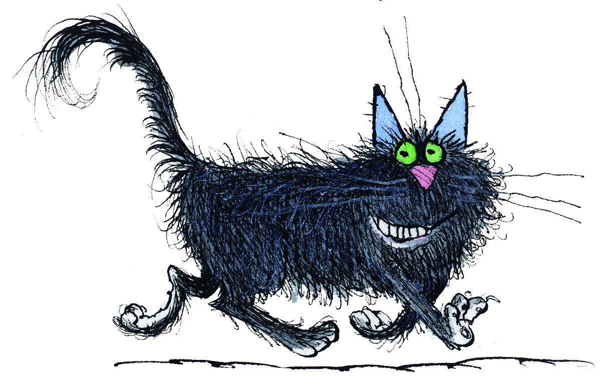

Мне всегда нравился чёрный окрас животных: лошадей, пум, кошек, собак.
Помимо цвета, мой кот обладает качествами настоящего кота:
Вот такой я потрясающий на просторах интернета:

Оригинал смотри здесь
А теперь я самый настоящий, такой как есть здесь и сейчас:
Во мне сочетается самое лучшее, это: